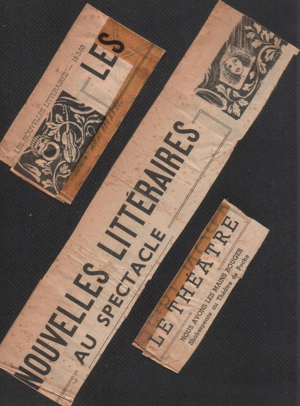
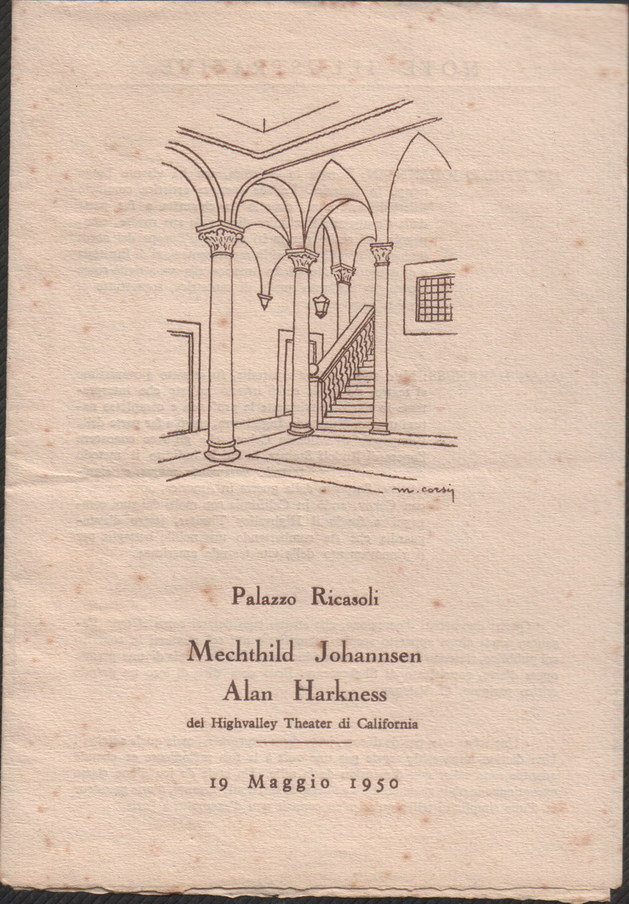
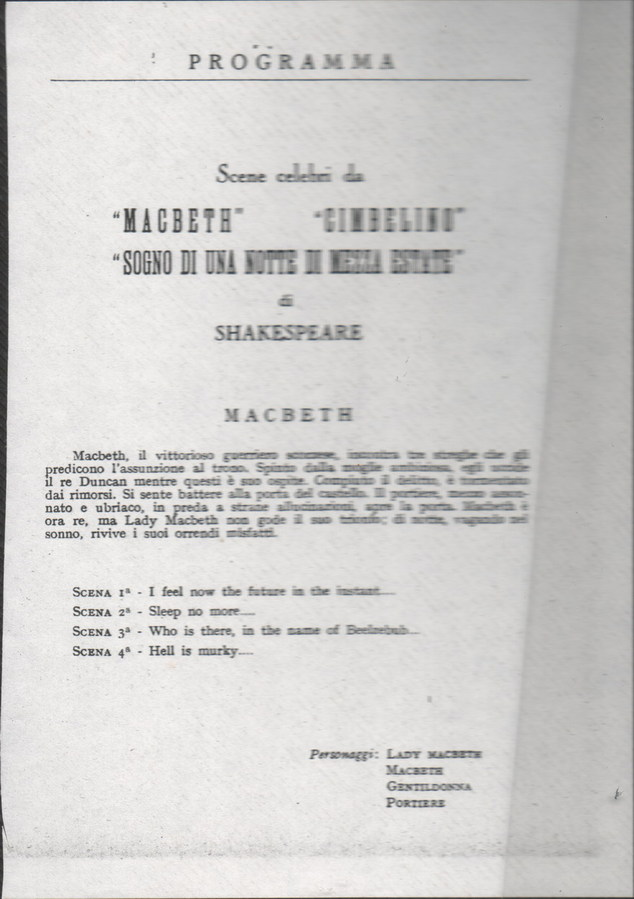
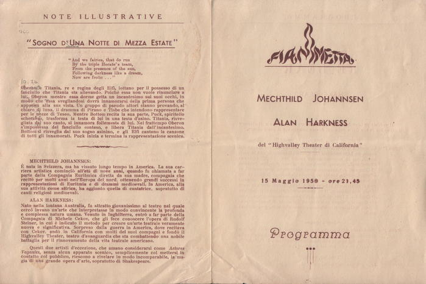
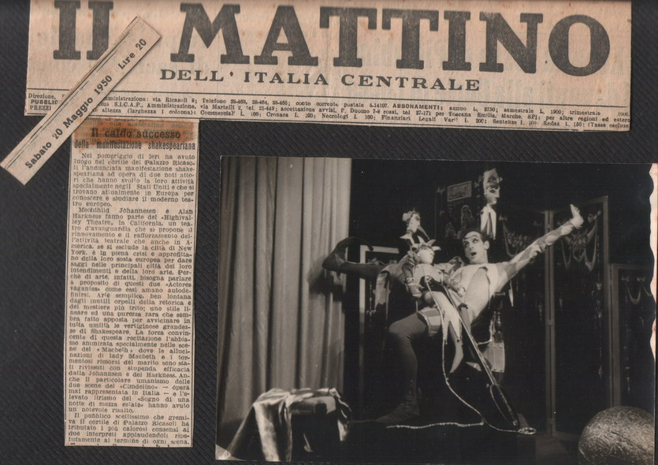

‘Moments’ scrapbook
… an assortment of reviews and programs from performances of Great Moments from Shakespeare.
![Program for American performance — ’SANTA BARBARA NEWS-PRESS RONALD D. ScHoFIELD U.S.A. A rare experience of theater artistry was enjoyed by the audience in the Lobero Theater last night, when Alan Harkness and his wife, Mechthild Tohannsen, presented their condensed version of Shakespeare’s “King Lear.” so skillful was the selection and knitting to- gether of the lines, so artful the use of lighting, color, costumes, makeup, and simple setpieces on the barren stage, and so eloquent the vocal, physi. cal and choreographic communications. that one sensed the distilled essence of the drama. …one could easily evoke the rude majesty of the kingly hall, the courtyard of the ducal palace, the stormswept heath, to lend a scenic frame for the compelling figures of the two players. There was excitement and magic in the way they moved and gestured, their use of cloaks, flowing draperies of rich, contrasting colors, and veils. Harkness played only the title role, unkempt. dis. traught and yet stall commanding in his moments of rage and remorse. Miss ohannsen plaved the three daughters, by a sim aple device of veils of two colors, and the swift and complete change of voice, racial expression and inner character as one gave way to another. She also appeared as the motleyed Fool, capering and taunting and versifying, in tender solicitude for the mad old king. The ca- denced lines were spoken primarily for their dra- matic impact … there was richness and subtlety and nuance of expression that we experience far too rarely in the theater today. Miss Johannsen had a wide range of vocal color, timbre and pitch in her four roles. She was outstanding as the gentle and forthright Cordelia and the coldly ruthless Goneril. In the tender scene where she seeks to soothe her father and restore him to his senses, she sang two lovely songs without words, to her own accompaniment on an old Irish harp, and re- vealed a voice of remarkable purity, range and expressive beauty. Harkness’s characterization, in appearance and movement and vocal expression was excellent. The production was a contribution of great aes. thetic and educational value, and at the same time compelling nent. It is to be hoped that this talented couple will be persuaded to give others of their “Great Moments From Shakes. peare” here-for the enlightenment of young stu. dents and the inspiration and enjoyment of the general audience. ALAN HARKNESS and MECHTHILD JOHANNSEN Great Moments from Shakespeare](image/1/mYBOJA81AQYKZWfOnnupIw506590/GW670H719.jpg)
![Program — THREE COMPLETE PROGRAMS king Lear Romeo and Juliet Machett = Cymbeline A Midsummer Night’s ream … from the press. ’LES NOUVELLES LITTERAIRES’ GABRIEL MARceL Paris … The other evening this shakespearean presence filled the theatre like a sublime breath. And with what means! Not even rudimentary scenery. The feminine interpreter personified one after the other the three daughters of the king as well as the Fool; rival of Ruth Draper, she managed without effort to reconstruct by gesture, intonation and mime the soul of each of the four characters. In the incomparable scene, where Cordelia ministers to the distress of the demented king, accompany- ing her lullaby with the harp, she sang with the most pure voice don’t know what melody per- fectly suited to the situation. Her partner gave all his stature to the personality of wear; in the latter scenes he simply took one’s breath awav. ’ARTS’ CATHERINE VALOGNE Paris … what actors! Impeccable diction delivered with voice at once melodious and warm andsadanted without effort to the dimensions of the theatre. A style of playing of exceptional class where the ges. ture is of rare beauty, breathtaking; a grandeur and simplicity of which one knows few examples in Paris. Ah! that Juliet interpreted by Mechthild Johannsen; how moving and beautiful and pure! And Alan Harkness! it is all of Shakespeare reviv. ing through him. What fire in his acting, what flame where the rhythm of the verse recreated the emotion and the very life seemed renewed as by a miracle before your eyes. The miracle of one of the most beautiful texts ever, spoken by two great actors, Mechthild Johannsen and Alan Harkness. ’NATIONAL ZEITUNG’ Switzerland With admiration one followed the splitsecond transformations of versatile Alan Harkness from Macbeth, vacillating between power-cravenness and conscience, to the bawdily cursing drunken Porter; from the nobly roguish elfking, Oberon to the pert woodsprite, Puck, who makes his wild leaps with incredible agility. Harkness’s portrayal of lachimo, whom he carefully deprived of any criminal intent and made appear as a vain inflated buffoon, showed his remarkable talent for the gro. tesque. Mechthild Johannsen appealed particularly as the graceful queen of elves, Titania. Her expres. sive gestures and singing, which rang pure as a bell and which she accompanied on the harp, lent a special charm to her playing. ’BASLER NACHRICHTEN’ Switzerland To be sure, it was Shakespeare in extract, but the extract was truly strong enough to stagger. A whole world was conjured up on the stage. ’WESER KURIER’ Germany Immortal Shakespeare unpretentious, and above all inwardly filled, that is how theatre should al. ways be played. The audience forgot time and space, became all eye and ear; a rare and intense experience. ’IL MATTINO DELL’ ITALIA CENTRALE’ Italy . roaring success of a Shakespearean production. … linear style and a rare purity which expressed in all humility the dizzy height and greatness ot Shakespeare.](image/1/CLucqk_SPNdRZHFSTiqW2w476731/GW668H735.jpg)

![French review — AI eu l’autre soir au Théâtre de Poche la plus heureuse surpri se. On donnait non le specta- cle coupé pour lequel j’étais venu, mais quel- ques scènes du Roi Lear et du Songe d’une nuit d’été interprétées par Alan Harkness et Mechtilde Johannsen du Highvalley Theater de Californie. Alors qu’à Othello, il y a quelques semaines, je n’avais eu aucun sentiment de la pré- sence shakespearienne, malgré l’opu- lence des moyens mis en œuvre à la salle Richelieu, l’autre soir cette pré- sence emplissait la salle comme un souffle grandiose. Et pourtant ! Pas le moindre rudiment de décor bien plus, l’interprète féminine incarnait tour à tour les trois filles du roi et même le fou; émule de Ruth Draper, elle parvint sans le moindre effort à nous restituer par ses gestes, par ses intonations, par l’expression du visage l’âme même des quatre person- nages. Jajoute que dans la scène in- comparable où Cordélia berce en s’ac- compagnant sur la harpe. la détresse du roi dément, elle chanta de la voix la plus pure je ne sais quelle mélodie parfaitement accordée à la situation. Son partenaire donna toute sa stature au personnage de Lear ; dans les der- nières scènes il fut tout simplement bouleversant. Je lisais l’autre jour qu’Othello est une œuvre périphérique. Ici nous sommes au cœur même du lyrisme shakespearien. Mais j’en viens à me demander si en dernière analyse, Sha- kespeare ne serait pas aussi intradui- sible que Wagner, et si les meilleures traductions, parmi lesquelles nous de- vons compter celles qu’ont signées Re- né Lalou et Mme Christine Lalou peu- vent être autre chose que d’indispen- sables instruments de travail. Je signale en passant que plusieurs des grands chefs-d’œuvre shakespeariens dont Hamlet et Macbeth viennent de reparaitre aux Editions de Cluny dans la version qu’en a donnée notre col- laborateur. Les deux acteurs du Highvalley Theater joueront tous les jours, si je ne me trompe, au Théâtre de Poche, pendant la dernière semaine du mois, des scènes de Roméo et Juliette. Je compte faire mon possible pour aller les entendre. Retrouverai-jo l’émotion de l’autre soir ? Gabriel MARCEL.](image/1/srJKCxfqWLbvLjJGbaySOQ182071/GW350H1180.jpg)
![Basel review — Dienstag, 24. Januar 1950 - 106. Jahrgang, Nr. 36 Basler Dachrichten mit Ginanz- und Sandelsblatt Isopedition: Dafouratrasse 49 Telçbon 23860 into Preis der Nummer 3) CGP Annoncen-Expedition AG. Freiestrass TEATRO SAN MATERNO ASCONA Tach grossen Exlolgen in Paris a Hosens Rom MECHTHILD JOHANNSEN und ALAN HARKNESS Mittwoch, 9. August, 21 Uhr präxis MACBETH CYMBELINE mir Kostom/and Misit a MIDSUMMER NIGHTS DREAM Samstag, 19. August, 21 Uhr präzis Lederionzert Voelkerstimmen von Gestern und Heute Korten zu Frs. 2.50, 3.50, und S, bei Poncoldi• Ascono](image/1/RmEWY0KW0-fFdsRDuEbGQg575627/GW641H477.jpg)
![Basle review — Basel, Freitag, 27. Januar 19: Abendblatt Nr. Patio1- 3eitung Verlag, Redaktion, Expedition, Bucknlage 14, Telephon 5 80 80, Postcheckkonto V 2393 Inseraten-Verwaltuniel, Freiestrasse 29, Telephon 2 Shakespeare-/bend im Goetheanum Aus dem BreTTae Ti 11.39, o Maeso Te 2169, 13 stadura Trage) 1 Semear Fr. 135, 3 Aciaste 5. Wenn Szenen aus Shakespeares Dramen t etelecher sprache ausecnrs Unsterblicher Shakespeare 18 Ca Galade Kabriaro la bedeutet die abendliche Fahrt nach Dornoch, der stocision. dunkle Wez zum Goetheanum und die mitternachtliche Vona Gontio wissen wir daha kein zu grossen Opfer. Das den geousen Anal its. rke kommenden Sobauspieler Alan a Khos in Original vertraut waren. So _Macbeth Mechthild ohannNe und Julla noch in bester Erinnerung Die erhosiren Geschehnisse inadacbel ¡Schurken Tachlmo Im Schlafgemach der treuen und peine vorzüglich Im Grotesken legende Begabung. Die starchaften Konlg Cymbelines und mebrfache Verwandlung vom hoheitsvollen und schilemilch Streit und Versohnung des Elfenkönigs schalkhaften Eifenkönlg Oberon in den kecken Wald chts- Kobold Puck, der mit unglaublicher Elastizität seine umen zeigten in sehr geschickter Auswahl die](image/1/40jOTck9hCJkFVzAC4FvZg652068/GW843H627.jpg)
![German language newspaper review — Stemer Stadridten mit NORDSEE-ZEITUNG urschernei seit 1743 / Schönemann Zeitungsverlag GmbH., Bremen Mittwoch, 22. März 195 Englischer Theaterabend in Worpswede Die Vergangene Woche brachte den Worps- Johagnien hit eine große Könnerin, es wedern ela künstterisches Brelgnis von ein- stättet sich nicht nur algartigem. Wert: eine In der elgentömlich szenlsche Darstellung Auftassung, von ihrer schauspiele von Shakespeares AKUnlir Lears alteng- rischen Aufgabe hat, sondern vor allen Dinge saouracie, Die ausfübrenden in Ihres fraziösen Anmut, in den herben und Waren Mechthild Johannten und Alan Hark- zugleich sehr sanften Akzenten, die sle threa niess, beide aus Kalifornion, Die Veranstaltong, schenen Worten gibt ttroßen selchnete sich Es kann verichledene Meinungen darüber durch Ihr hohes daft es sich dabel um eine Entwurzelung des Unfer táglichee Wort Ein Miteinander aweier Menschen ist eine Un- moglichken und, wo es doc vorsonden acheinerine Beschränkung, eing gegensellige Obereinkunll, weldie einen Tell oder beide Telle Ihrer vollsten Freihelt und Entwicklung beraub aber das Bewusisein vorgas. gesetzt, das auch zwischen den nachaten Menschen unendlicio Fernen bestchenbleiben kann Ihnen ein wundervolles Nebencinonderwonneoerwadisenwenn es ihnen geling die weite zwischen sic zu lieben.di Ihnen die Moolichken giol einander immer in ganzes Gestoll und vor einem großen Himmel tu sehen Shakelpeare-Abend der Goethe-Gefellicaft Einen seltenen kunstlerischen Genus erlebte man am montagmrunktheateresicchthldsonannsen und Aion Harkness, zwel amerikanische Schau- spieler von aubergewohnlichersesabungezeisten Szenen aus Shakespeares Dramen. Sie vorzichteten au Kulisson und die Spannung. des reschlossenen Handlungsablaufs, So richtete sich die Aufmerksam- kelt der Zuschauer allein auf ihr Spiel, und dieses Spiel kann in seiner Eindringlichkeit kaum Toren werden. Durch hohe Spruchkultur die Ste- hen würden In reinem Stakespearc-Enflich darne- und weino wurden dis delpriche aur Romeo und Verhaltenhelt_der Theatrallk ninem szenen Macbeth brachten eine mitreiSende Steigering des Goberan Stone aus A Midsummer Night’ Dream“ war ein Spiel, wie es nur Shakespeare. erdichten und durch Johannsenzeixte…_cine/ Schlarwandeln; Aten starkner gab sein testecaliPloringr vor, dem Tier Po Dr August K openbere es zu](image/1/76PmkiEML3NaRrbXzz9N0w526664/GW817H613.jpg)
![German poster — Chate/peare2lbend Szenische Darstellung in englischer Sprache durch Mechthild Johannsen und Alan Harkness (aus Californien). Einleitende Worte: Prof. Dr. Aug. Kippenberg. Am Montag, 13. März 1950, 20 Uhr, pünktlich in der Aula Dechanatstraße werden Szenen aus folgenden Dramen geboten: Macbeth (4 Szenen): Macbeths Brief an die Lady • Ermordung Duncans, Erwachen des Gewissens • Pförtner vor dem Höllentor • Lady Macbeths Schlafwandeln. Es treten aut: Lady Macbeth, Macbeth, Kammerfrau, Pförtner. Cymbeline (2 Szenen): lachimo macht den Hof : Imogens Schlafgemach. Es treten auf: Imogen, lachimo. 21 Midfummer Might’s Dream: Verzauberter Wald. Es treten auf: Pud, Titania, Oberon, Bottom. Eintrittskarten zu DM 2.- bei Praeger & Meler, Am Wall 185. Eine Vorstellung für Schüler und Studierende findet am Donnerstag, 16. März 1950, 20 Uhr, in der Aula Dechanatstraße mit Szenen aus Romeo and Juliet und A Midsummer Night’s Dream statt. Eintritt 50 PF. Eine beschränkte Anzahl Karten für Erwachsene (DM 2.-) nach dem 7. 3. bei Praeger & Meler. Aus den Basler Nachrichten vom 24. 1. 50 ShakespearerAbend im Goetheanum Dornach: Mechthild Johannsen und Alan Harkness, beides Künstler von stärkster und ursprünglichster schauspielerischer gabung, brachten Scenen aus Shakespeare zur Aufführung, die durch lebendige mittelbarkeit des Agierens und zugleich durch bewußte Schulung erreichte, e. Kultur des Sprechens in reinem Shakespeare Englisch etwas schlechthin Ergreifendes und Beglüdendes hatten.](image/1/k0nA6IYyiJh6Er2fX5bpeQ304536/GW639H900.jpg)
![King Lear in Goetheanum — «King Lear» im Goetheanum Shakespeares grossartiges Werk Könlg Lears wird heutzutage nicht mehr oft auf die Bühne ge- bracht, nicht weil es szenisch allzugrosse Schwierig- keiten bieten würde, sondern weil das Geschehen für die Bühne fast zu gewaltig ist. Die Geschichte des al. ten, von seinen Töchtern verstossenen Königs, der in der äussersten Bitterkeit menschlichen Elends auch noch den entfesselten Elementen preisgegeben wird und dem Wahnsinn verfällt; daneben die nicht minder grässliche Geschichte von Gloster, dem von seinem ehrgeizigen Bastardsohn auf offener Bühne die Augen ausgestochen werden das sind Grausamkeiten, die sich das heutige Publikum nicht mehr ohne weiteres | ansehen kann. Denn wenn uns etwas ausser geplagten Tieren und misshandelten Kindern das Herz zusam- menpressen kann, so ist es sicher der ohne Mitleid verstossene Greis. Aus diesem unerbittlichen Kampf zwischen Liebe und Hass wurden am Samstagabend im Goetheanum dem reichlich erschienenen Publikum von zwei Schauspielern acht Szenen in englischer Sprache ge- boten, Indem man die Glosterhandlung ganz aus dem Spiel liess, ergab sich eine neue Einheit, ohne dass der Intensität des Geschehens ein Abbruch getan wurde Zwar war es Shakespeare im Extrakt, aber der Ex- trakt war wahrhaftig noch stark genug, um zu er- schüttern. Einsam im Mittelpunkt stand die tragische Gestalt Lears, mit schimmerndem Purpur angetan. Alan Harkness spielte seinen Sturz vom Glanz ins Elend mit schönem Pathos und wusste selbst noch im Wahnsinn eine grossartige Würde zu bewahren. An Mechthild Johannsen, die gleich vier Figuren ver- körpern musste, konnte man eine unglaubliche Wand- lungsfähigkeit bewundern. Sowohl als hingebende Cordelia (besonders schön, als sie am Krankenbett ihres Vaters zur Harfe singt), wie als harte Goneril, und als heuchlerische Regan wusste sie zu .überzeug gen, und wenn sie auch alle im gleichen Gewand wir dergeben musste, genügte allein schon eine andere, Drapierung des Schleiers, um uns eine ganz andere. Wesensart vor Augen zu führen. Aber auch die Kna- benrolle des Narren wusste sie trefflich zu meistern, wenn sie mit tänzerischer Beweglichkeit Lear um- gaukelte und ihre Schelmenliedchen zum besten gab. So gelang es den beiden Künstlern, obwohl wie zur Zeit Shakespeares auf alle szenischen Zutaten verzichtet wurde, eine ganze Welt auf der Bühne heraufzube- schwören. Gerade weil sie allein auf die eigenen sprachlichen und körperlichen Mittel angewiesen wa- ren, konnten sie der Heideszene neue Effekte abge- winnen: wenn sie in ihrem Mund das Heulen des Win- des mit dem eigenen Schlottern mischten, so brachten sie so auch für unsere Phantasie den Sturm und Lears Leiden zu einer Einheit. Durch diese Beschränkung auf das Wesentliche wurde aber auch das, was eine realistische Learaufführung heute fragwürdig macht, glücklich umgangen. Rn Dienstag, 30. Mai 1950](image/1/bPQIimbxIEklbN_unowBOA274916/GW596H1136.jpg)
Clippings re. Italian performances
![Review — TEATRO SAN MATERNO ASCONA MECHTHILD JOHANNSEN und ALAN HARKNESS Zwei Shakespeare Abende Szenische Darstellung mit Musik und Kostüm Donnerstag, 27. Juli, 21 Uhr präzis ROMEO and JULIET Donnerstag, 3. August, 21 Uhr präzis KING LEAR Englisches Theater in Worpswede Karten zu Frs. 2.50, 3.50, und 5.- bei Pancaldi - Ascona Daß nur zwei Schauspiolar. - Mechthild Autobus: Abfahri Locarno Stazion 20 h. 50 hält auf Verlangen bei San Maferno hannsen und Alan Hatkneß New York und ci fornien, wo beide ihr eigenes Theater haben) auf dem kaum _Bühne zu nennenden Podi der Worosweder Kunstschau imstande konnten. Shak-speares große Lear-Tragodie, ewige Spiel vom verstosenen Vater und Ron zum vollständigen Erlebnis zu machen, das ha komer der Zusdhater vorher für mögilch gehait Aberinicht soisehr das verstandesmäBig begriffe Wort, ais vielmehr der Klang der Spradie, mit Hilte weniger Requisiten, prachtv farbigen Kostümen wid vor allem mit fast t dorischer Bewegungskunst erreichte Tusion wit lid großen Theaters mußte alles Fehlende v gessen lassen. Alan Markne8 gab echte klassist Bundentradition mit Gesten, die den engen Rat Szene nicht wemger als vor vollig verschied artige Gestaten: Beide Künstler wollen Horns auf ihrer nachsten Deutschland-Tourr wiedersinawornauedoeinkabrana HR eatri e Concerti Maggio Musicale , ascluttente di gesto o di voco, la squam- [tita » lírica di Shakespeare. hannsen, proveniento da uns scuola di particolare a ca: 5 La prima del « Prigioniero » curitioin, avverte n denza delle parole e della tragedia che laterpreta, PiQ sonoro: Jo Haráness, Ton- stasera al Comunale California Righvalley Theater, Da Etcadro d’avanguardia che Stasers, alle ore 21, prima rappre. tendo si rinnovamento di quedia vita rentazione del « Prigioniero s teatrale, « Actores. Vagarites», come a Luigi Dalia piccola, Maestro diréttoro e con- questo loro mes Spcertatore Bermann Scherches. Interpre ragglo di estrema remplicita u priscipall: Magda Laszlo, Mario Blo- velaro, alvolla tatto quell’infnito al Scipione Colombo. Maestro del Coro Tantaris e as aniortobl che 16 tesso Andrea Morosint, Regista: Brontai kcopeaunsterusyaalueareldh.ogalcap Horowick. o di Ento *Pecento chei die attori il stano 11. recite in un pubblico coai AI = Prigiontoro torà seguito la ter. rappresentaziono di « Chout (I) Bur- lose) », nella nuora versione corcogran. cardi Moss, concertata . dal maestro Bitoro Gracis e in- serpretato da WIndimir Skouratot, Mfa- ria Dalba, Ballo: Albert Mol o «Magglo Sinalcale Florent!- nos, Scene grasenaro Guttuso. ad rappresentazione оге. 16,50, seconda 2a1 maestro Serafio. Interpretis Renata Tebaldl, Miens Nicolal. Giorgio Giacomo Vacbi, Mario Petri, Camillo Righini, .Marl, Mary Gaal, Lucin ’Daniell, Coro Andren Morosial, Ro dita Carlo Piccinato. Scene o costami bottettl o figurinl di Primo Contl. Proneatono intanto alacremente | pro- parativi per la realizzazione della Se. Shakespeare in Palazzo Ricasoli MaDCaTa solo It pubblico meno ele Stechtbild Johannsen ilaridees, un’attrice avinzera o an at- sastraliano reatdenti in America: Che percotrono palegicealel ands di mondo reditando framments Sontespearo, hatno detto Machelli?i nell’androne di langarno, plurilingue6 discreto.wvmeito educato negil applausi che Il tremendo furore di Lady a atalisse sulla scalca. Shakespeare im Zimmertheater Paris, 24. März (NZ). - In einem ganz kleinen Pariser Theater, dessen Zuschauerraum nur 75 Personen faßt, dem sogenannten Taschenthea- ter, spielten kürzlich zwei junge amerikanische Schauspieler, Mechthild Johannsen und Alan Harkness, Szenen aus Shakespeare. Auf der nadsten Bühne ohne alle Dekoration spielten ste und rezitierten nicht nur, wwie man viel- Leicht hatte erwarten können, ia sie bepntgten sich auch nicht mit abgeschlossenen Dialogen, sonderh verwandelten sich hinfer einer behelis- matigen Kulisse innerhalb einer einzigen Szene t fünf verschiedene Rollen… Nur die hohe Gestaltungskraft der beiden Schauspieler Konnte die Gefahr eines inneren Bruches, die stch teicht daraus hafte ergeben konnen, Uberwinden und die Zuschauer Shakes- peare teter erleben lassen, als es in den meisten Blamavell ausgestatteten Aufführungen der Fall Ist.Die Einfühlung In das Intime Milieu des Raumes war den Künstlern nicht fremd, da sie in Kalifornien ein fast ebenso kleines Theater, das „Highvalley Theatre“ leiten. che bure uterrara fungion! a scent senza appararo, Talero Gelatapocto 51 •Porfiere del castello». Uno Shakespeare dovito. Garenzoe riprese, cho core Af](image/1/CAL7Zr3SJ3tq-T5bUGAaJA594596/GW834H1128.jpg)
![Italian newspaper reviews — LUGANO, 11 maggio 1949 GIORNALE DEL POPOLO la te le scene centrali dell’uccisione In Duncan; di « Re Lear > la scena I- della bufera e la morte di Corda • e del padre. Molte cose vorremmo dire che lo spazio vieta. Noteremo solo it %. fatto fondamentale : che i due al il tori risolsero felicemente l’andag o problema di dare di Shakesperre) E tanto il drammo che la poesia. La ° recitazione e il gesto, entrambi belissimi in sè, riuscirono ad espri. I mere insieme con armonia vitale la I intensa o immediata passione, ami na e l’incanto verbale che, senza snaturarla, la trasfigura. Cosa sem. cellenti. Essi recitarono e agirono naturalmente, ma con la naturale: za speciale che conviene al gene 9 re. Ce chi pensa che naturalezza i voglia dire parlare sempre come ai parla d’ordinario, anche quando i tratta di cose non ordinarie e dette io maniera straordinaria. Diment? cano che ogni forma ha la sua pro pria naturalezza: altra quella del laptosa comune, altra quella dell’ tissima poesia. Sembrano pensar che un uccello non voli in modi naturale solo perchè non fa l’e fetto d’un pesce che guizza. Ma difficoltà non sta nello sciogliere E di ticolia non do nell secioglier, ¡solverlo in pratica, trovando qua le sia la vera naturalezza in ogni caso speciale. I due interpreti seg prirono la giusta soluzione d’istit te, con la loro squisita, accorati mente fascinalrice sensibilità. Pe ASCONA questo la commozione degli ascolti Serata Shakespeariana tori tu profonda e pienado lasc Venerdi 6 maggio al Teatro S. in tutti un vivo desiderio di cose Materno, Mechthild Johanasen e rinnovata. Alan Harkness presentarono sceni- Nella serata di ieri, sempre camente frammenti da « Romeo e Teatro San Materno, Mechthi “Giulietta ›, ¿Macheth» es Re Lears Johannsen ha svolto un suo pr nel testo inglese. Del primo dram- gramma di canti popolari antic ma, impersonando con abilissima e moderni, accompagnando la se versatilità non solo i due protagoni- dolce voce suggestiva che già ci to sti, ma anche caratteristiche parti cò col malioso suono del secondarie, essi diedero una sinte- cetra. G. L. BREZZO si breve ma efficace e idealmente completa. Molto encomiabile la scena finale che figura la ricon- ciliazione delle famiglie nemiche sulla tomba degli infelici amanti scena troppo spesso trascurata an- che in rappresentazioni più vaste da artisti che la credono superflua, mentre è quella che dà alla trage- (at di due soli un profondo senso sociale che la magnifica e la giu- stifica. Di Macheth» furono offer-](image/1/fnPfFYTQdkPQglrU0qZPjw422113/GW993H1503.jpg)
![Italian poster for Teatro San Materno, Ascona, quoting American press notices — TEATRO S. MATERNO - ASCONA GREAT MOMENTS FROM SHAKESPEARE “King Lear ” “Romeo and Julies” „Macbeth “ acted in Englisch by Mechthild Johannsen and Alan Harkness FRIDAY May 6 th 20.30 p. m. With a suggestion of costume and music the Strolling Players bring you the magic of Shakespeare. From the Press: The sure senso of theatre shown by Harkness’ players in their middle Englisch Christmas play creates this stark „Macbeth” The gifts of characterization which created Anton Tschekhow’s unhappy folk of „Uncle Vanya“ take Shakospeare’s familiar characters from the textbooks and bring them to vigarous life a Venturs Star Fres Prsas +The dramatic artists proved beyond question that they are seriously to be reckoned with in the American theatre today a Reisnd Star.Fr66 Denee *This particular production is one of the best seen here in years. The Bard himsell would have besu spellbound by the oxpert staging of his tragedies. Alan Harkness deserves high praise for this masterful theatrical achievement» (Hollywood Citizen News) *Last night in the idyl/allay of Olai a miraclo happened. A group of antits created a trus theater ensemble and stand as a symbol that art as art is still in the first rank. death As „Peer Gynt’ ” Harkness veritabla droVo his steed and his mother to heaven in the Ase and shows usathat losen was trulv a Emil Ludwig Karton 9.50. 3.50 und 5.- Franken boi Foto Pancalds Ascona und Abendkasse Kindly return to Harkness](image/1/G2QNYVum2f3eaW7zBP38vA665276/GW654H922.jpg)
![Italian poster for a performance at the Teatro Fiammetta — TEATRO FIAMMETTA Lunedì 15 Maggio ECCEZIONALE UNICA RAPPRESENTAZIONE di Mechthilde Johannsen e Alan Harkness i Primi Attori del celebre “HIGHVALLEY THEATER DI CALIFORNIA” che interpreteranno in inglese qualche scena più saliente di “RE LEAR” e “SOGNO d’UNA NOTTE DI MEZZ’ ESTATE” di SHAKESPEARE Una scena nuda… nessun adobbo… Soltanto due interpreti; MA QUALI INTERPRETI! Una dizione impeccabile a servizio di una voce calda e melodiosa. Uno stile di recitazione di classe superiore, dove il gesto è di una bellezza rara, di una grandezza e semplicità tali che non si conoscono simili… (CATHERINE VALOGNE) “Arts” Prezzo: L. 1.200 Soci L. 1.000 Per prenotazioni Telef. 470-464](image/1/sr4qaSJXgk1gpejtlVPqLA226729/GW678H1025.jpg)
![Italian poster (second printing) for the Teatro Fiammetta performance — ECCEZIONALE UNICA RAPPRESENTAZIONE di MECHTHILDE JOHANNSEN e ALAN HARKNESS i Primi Attori del celebre «HIGHVALLEY THEATRE DI CALIFORNIA» che interpreteranno salieniles qualche scena saliente RIE ILIEANIR SOGNO D’UNA NOTTE DI MEZZ’ ESTATE di SHAKESPEARE Una scena nuda… nessun addobbo… Soltanto due interpreti MA QUALI INTERPRETI! Una dizione impeccabile a servizio di una voce calda e melodiosa. Uno stile di recitazione di classe superiore, dove il gesto è di una bellezza rara, di una grandezza e semplicità tali che non si conoscono simili (Catherine Valogne) «Arts » Prezzo: L. 1.200 - Soci L. 1000 Per prenotazioni telefono 470-464](image/1/fUAbzmZxxKnf8TTmIuiK_A630017/GW591H591.jpg)



![Italian program 2 — PROGRAMMA Scene celebri da RE LEAR di SHAKESPEARE Ti secchlo re liesr bordeciso di rinonciare alle corons e di dividere fareorierianits belle eran sair lotorno ad ona mappa del Lear andanzia che dividera ll territorio son in parti Iliforoando dalla caccia, lear e sorpreso dalla felis, I sao Baffone fa amari commenti allo rosrobero esseri PROGRAMMA “ No, you annatural haga!” ScuNA 4 - Cioneri e legan decidono che ear debba rinunciare al soo Il re, plattosto che rimanere con le Ingrate flelle, oreferisce affrontare un minaccioso temporale Conerl e Re del castello mentre I temporale wmow windshand crack your coeeki. “ Come let’s away to prison…” do che ear e Cordelia possano suscitare la compassione del ^ 0 09 10 03 00600030 CONTEnTE CORDXLIA](image/1/TzZz626kSIcESsTd6Q4fpQ616124/GW710H477.jpg)
![Italian program notes — NOTE ILLUSTRATIVE MECHTHILD JOHANNSEN: E nata in Svizzera, ma ha vissuto lungo tempo in America. La sua carriera artistica comincio all’età di nove anni, quando fu chiamata a far parte della Compagnia Euritmica diretta da sua madre, com- pagnia che recitò per molti anni nell’Europa del nord, ottenendo grandi successi in rappresentazioni di Buritmia e di drammi medievali. In America, alla sua attività come attrice, ha aggiunto quella di cantatrice, soprattutto di canti religiosi medievali. ALAN HARKNESS: Nato nella lontana Australia, fu attratto giovanissimo al teatro, nel quale cercò invano un’arte che interpre- tasse in modo convincente la protonda e complessa a tura umana. Venuto in Inghilterra, entrò a far parte della Compagnia di Michele Cekov, che gli fece conoscere Popera di Rudolf Steiner, in cui è indicato il metodo per creare un’arte teatrale veramente nuova c signi- ficativa. Sorpreso dalla guerra in America, dove recitava con Cekov, andò in California con molti dei suoi com- pagni e fondò il Highvalley Theater, teatro d’avan- guardia che sta combattendo una nobile battaglia per il rinnovamento della vita tcatrale americana Questi due artisti d’eccezione, che amano considerarsi come Actores Va- gantes, senza alcun apparato scenico, semplicemente col mettersi in contatto col pubblico, riescono a rivelare in modo incomparabile, la magia di una grande opera d’arte, soprattutto di Shakespearc. Ecco cosa dice di loro un grande critico parigino, C. Valogne. Une scêne nue, pas de décors, juste deux interprètes, mais quels acteurs! Une diction impeccable servie par une voix à la fois mélodieuse et chaude adaptée sans effort aux dimension de la salle. Un style de jeu d’une classe exceptionnelle où le geste était d’une beauté rare, bouleversante, d’une grandeur et d’une simplicite telles qu’on n’en connait peu d’exemples a Paris…](image/1/xzTjeS9Qs3olCwZBDrf9Fw460808/GW708H701.jpg)

![Italian press article — Shakespeare a palazzo Ricasoli Firenze, maggio, on eccczionale speltacolo a prosa nel Cortile di Palarro gentilmente Frente donannsen e Alan karknexs del affich. taeatres di Callfornis. areshorres peare, a mo Tiron o scelto pabblico disinvitati Free ins Das aness atelbarco, signora Murany, marchesn del Brasile, Black di Nancastro. TEATRO SAN MATERNO ASCONA GASTSPIEL von Frau MECHTHILD JOHANNSEN und Her ALAN HARKNESS VOELKERSTIMMEN VON GESTERN UND HEUTE Liederkonzert Mittwoch, den 12. Oktober, 20 Uhr 30 porse, Albert Stellen e aaria Orsint Baroni, fit Biond haltan. derristori, sontessa Flavia Farina Cini. marche: Da alara Ananori aignora Jessio Ami. eisCrossin Pontell: signora Biena Ciacc.Anna essa aetella Planetti, SCORESASTREETETOSTERAISTORIS Ginis LA NAZIONE ITALIANA GREAT MOMENTS FROM SHAKESPEARE acted in English wit costumes and musik „Romeo and Juliet“ „King Lear” STEAMEOL Donnerstag, den 20. Oktober, 20 Uhr 30 Reppresenterioneeresse a Pelezze Ricaseli „Cymbeline“ .Macbeth ” „Midsummer Nights Dream“ Donnerstag, den 27. Oktober, 20 Uhr 30 Karten zu Frs. 2.50, 3.50 und 5.- bei Pancaldi Ascona und Abendkasse L’ILLUSTRAZIONE 22 Anno 77 - 4 glugno 1950 Fascicolo 3968 - Settimanal His 100](image/1/5Z8kAhGqxUx_NVr_yCs8lA483004/GW879H646.jpg)
American performances
![Santa Barbara review — SANTA BARBARA NEWS. American Premiere Drama Duo to Present ’King Lear’ on Tuesday SANTA BARBARA, CALIFORNIA, SUNDAY MORNING, OCTOBER 7. [9 MECHTHILD JOHANNSEN as The Fool and Alan Harkness as King Lear are shown in a scene from the great Shakespearian play which they will present as a Civie Cheater benefit at the Lobero Tuesday. The American premiere of acted in “Karoline von Guender- Alan Harkness and Mechthild rhode,” a new play by the Ger- Johannsen’s performance of man contemporary playwright King Lear“ one of their ”Great Albert Stefan. She lived in Swite Moments from Shakespeare“ will erland as a child and speaks Ger mark an important event in their man fluently. long and successful theatrical Santa Barbara audiences careers. Miss Johannsen, remember her for her perfon who is Mrs. ance of ”Dot“ in ”Cricket on th Harkness off stage, began her Hearth“ which the Ojai Plage career in musie when she sang brought here. She also compo in operettas in New York City. the music for ”Macheth,“ A very talented musician, she also toured from Ojai to has composed all the music for Barbara. their series of Great Moments Harkness began his from ”walk-on,“ Shakespeare.” Her first a painter, and received she reports, was ship to the National Gall with her mother, who was the Australla, his native coun only teacher of Eurythmy in first became interested New York when she was a child. ater by reading Gordon She also participated in Summer stock in New England. From Australia London where he act While on tour with her hus nese play. band in Europe, Miss Johannsen (Continued on Pase](image/1/RCuR24c15F3jZQoEkzl1EQ615051/GW903H1296.jpg)
![Lear in America — American Premiere Drama Duo to Present ’King Lear on Tuesday Santa Barbara News-Press, Wed. Eve., Oct. 10, 1951 Harknesses Condense ’King Lear’ Lobero Audience Enjoys Rare Theater Experience By RONALD D. SCOFIELD expression and inner character A rare experience of theater as one gave way to another. She artistry was enjoyed by the audi. also appeared as the motleyed ence in the Lobero Theater last Fool, capering and taunting and night, when Alan Harkness and versifying, in tender solicitude his wife, Mechthild Johannsen, for the mad old king. presented their condensed ver The cadenced lines were! sion of Shakespeare’s “King spoken primarily for their bear. dramatic impact, secondarily for Missing were the many inter. their phonetic value, and thirdly locking minor themes, the rich. for their intelligibility. For ail ness of detail and the pageantry; audience thoroughly missing also some of the weari. familiar with the text, the articulation some obscurities of this dour was perfectly adequate; for those to whom the lines are unfamiliar and doleful tragedy of senility, or long forgotten, it was not quite fading majesty, and gross be- trayal. But so skillful was the clear and forceful enough. Never. selection and knitting together theless within the subdued dy. of the lines, so artful the use of namic range of the performance lighting, color, costumes, make. there was richness and subtlety up, and simple set pieces on the and nuance of expression that barren stage, and so eloquent the we experience far too rarely in vocal, physical and choreo- the theater today. Miss Johann. graphic communications, that sen had a wide range of vocal one sensed the distilled essence color, timbre and pitch, in her of the drama. Continuity was four roles. She was outstanding well maintained, the stage seem- as the gentle and forthright Cor ed filled with the other silent delia and the coldly ruthless and invisible characters, and Goneril, but slightly less per- one could easily evoke the rude suasive as the Fool. In the tender majesty of the kingly hall, the scene where she seeks to soothe courtyard of the ducal palace, her father and restore him to his the storm-swept heath, to lend senses, she sang two lovely songs a scenic frame for the compelling without words, to her own ac- figures of the two players. companiment on an old Irish There was excitement and harp, and revealed a voice of re MECHTHILD JOHANNSEN as The Fool and Alan magic in the way they moved markable purity, range and ex- Harkness as King Lear are shown in a scene from the and gestured, their use of cloaks, pressive beauty. flowing draperies of rich, con- Harkness’s characterization, in great Shakespearian play which they will present as a trasting colors, and veils. Hark- appearance and movement and Civic Theater benefit at the Lobero Tuesday. ness played only the title role, for the most part in vocal ex- pression, was excellent; only a The American premiere of acted in ”Karoline von Guender. unkempt, distraught and yet few times did his facial anima- Ilan Harkness’ and Mechthild rhode.“ a new play by the Get ohannsen’s performance of man contemporary plavwright still commanding in his moments tion and tone color suggest a of rage and remorse. Miss Jo King Lear,” one of their “Great Albert Stefan. She lived in Switz- hannsen played the three daugh. younger man than the ancient ters, by a simple device of veils foments from Shakespeare” will erland as a child and speaks Ger of two colors, and the swift and English king. The production was a contri- nark an important event in their man fluently. ong and successful theatrical complete change of voice, facial bution of great esthetic and edu. Santa Barbara audiences will cational value, and at the same areers. remember her for her perform- time compelling entertainment. Miss Johannsen, who is Mrs. ance of “Dot” in “Cricket on the It is to be hoped that this talent- larkness off wage, began her Hearth” which the Ojai Players ed couple will be persuaded to areer in music when she sang brought here. She also composed give others of their “Great Mo- a operettas in New York City. the music for ”Macbeth,“ which ments from Shakespeare” here- very talented musician, she also toured from Ojai to Santa for the enlightenment of young as composed all the music for Barbara, students and the inspiration and heir series of “Great Moments Harkness began his career as enjoyment of the general audi. rom Shakespeare.” Her first a painter, and received a scholar- walk-on,“ she reports, Stream.” He then worked with ence, was ship to the National Gallery in ith her mother, who was the Australia, his native country. He Director Michael Chekhov it nly teacher of Eurythmy in first became interested in the England and later in this coun ew York when she was a child. ater by. reading Gordon Craig. try, and played the clown in he also participated in Summer N.Y. production “Twelfth Night. tock in New England. From Australia he went to But most of his time was take While on tour with her hus- nese play, London where he acted in a Chi- ”Lady Precious up with teaching. and in Europe, Miss Johannsen In Ojai, Harkness directed thy (Continued on Pay B:2, Col. 7) High Valley Theater group many productions well-remem bered by audiences here. “King Lear” will find Harknes playing Lear and Mechthild Jo hannsen playing the fool and the three daughters on Tuesday evs ning. They play without benar of elaborate setting or properti depending more on the actin and suggested costumes to over the different, characters.](image/1/-pjwmpWvAS22ZcQj4m3odg828479/GW1211H1739.jpg)
… an assortment of reviews and programs from performances of Great Moments from Shakespeare.

Clippings re. Italian performances




American performances